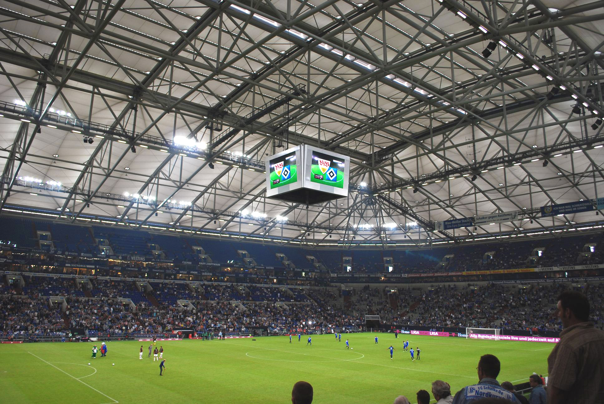
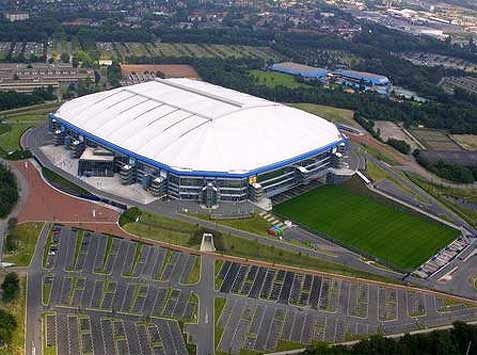

Schalke 04

Nombre completo: Fußball-Club Gelsenkirchen-Schalke 04 e. V.
Apodo: Die Königsblauen (los azules Reales)
Fundacion: 1904
Ciudad: Gelsenkirchen, Renania del Norte-Westfalia
Estadio: Estadio Veltins-Arena
TITULOS

Bundesliga
7
1934 - 1935 - 1937 - 1939 - 1940 - 1942 - 1958 RFA

Bundesliga 2
3
1981/82 - 1990/91 - 2021/22

DFB Pokal
5
1937 - 1971/72 - 2000/01 - 2001/02 - 2010/11

Supercopa Alemana
1
2011

Copa de la Liga de Alemania
1
2005
Copa de la Liga de Alemania
1
1996/97
ESTADIO
Nombre: Estadio Veltins-Arena
Fundacion: 2001
Ciudad: Gelsenkirchen, Renania del Norte-Westfalia
Capacidad: 61.673 espectadores

